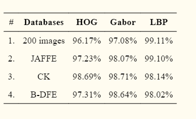
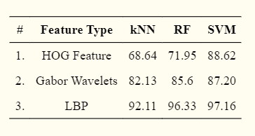

The mentioned feture extraction Techniques and classifications are compared on popular databases given below:
Performance of proposed method for different Databases.
here, we are comparing different databases along with three most efficient feature extraction techniques. From the given data analysis we can say that LBP technique has given almost best result for all mentioned databases.
Summary of Accuracies for various Feature Types.
In conclusion, it is evident from above mentioned figures, LBP+SVM performs better than Gabor-SVM and HOG-SVM as well as with comparision with other classifiers it gives more accuracy.